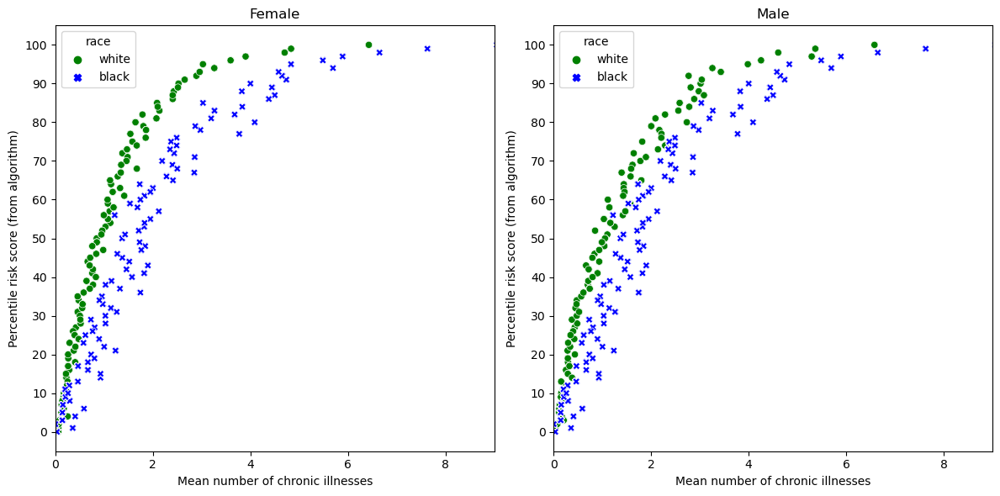
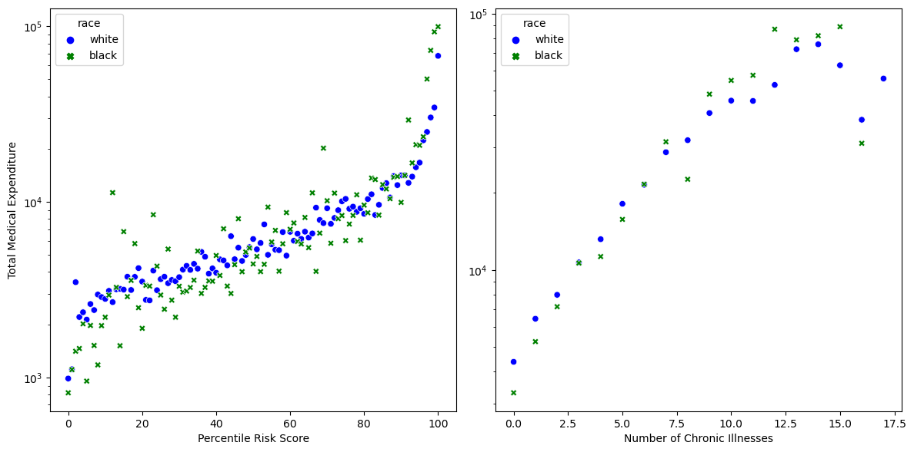

import pandas as pd
url = "https://gitlab.com/labsysmed/dissecting-bias/-/raw/master/data/data_new.csv?inline=false"
df = pd.read_csv(url)Dissecting racial bias in an algorithm used to manage the health of populations

Abstract
The goal of this blog post is to examine the findings of Obermeyer et al. (2019). This paper exposed the racial bias prevalent in an algorithm that was used to predict the health risk of different races. Obermeyer and colleagues found that by using medical expenditure as a predicting factor for health risk, the algorithm encoded bias of past decisions that allocated less money to Black patients than their equally sick White counterparts. By replicating the graphs and training my own model on the hospital data to predict cost, I was able to replicate the conclusions of Obereyer’s paper.
Part A: Data Access
First I accessed the data and explored it so that I could properly analyze it.
df| risk_score_t | program_enrolled_t | cost_t | cost_avoidable_t | bps_mean_t | ghba1c_mean_t | hct_mean_t | cre_mean_t | ldl_mean_t | race | ... | trig_min-high_tm1 | trig_min-normal_tm1 | trig_mean-low_tm1 | trig_mean-high_tm1 | trig_mean-normal_tm1 | trig_max-low_tm1 | trig_max-high_tm1 | trig_max-normal_tm1 | gagne_sum_tm1 | gagne_sum_t | |
|---|---|---|---|---|---|---|---|---|---|---|---|---|---|---|---|---|---|---|---|---|---|
| 0 | 1.987430 | 0 | 1200.0 | 0.0 | NaN | 5.4 | NaN | 1.110000 | 194.0 | white | ... | 0 | 0 | 0 | 0 | 0 | 0 | 0 | 0 | 0 | 0 |
| 1 | 7.677934 | 0 | 2600.0 | 0.0 | 119.0 | 5.5 | 40.4 | 0.860000 | 93.0 | white | ... | 0 | 1 | 0 | 0 | 1 | 0 | 0 | 1 | 4 | 3 |
| 2 | 0.407678 | 0 | 500.0 | 0.0 | NaN | NaN | NaN | NaN | NaN | white | ... | 0 | 0 | 0 | 0 | 0 | 0 | 0 | 0 | 0 | 0 |
| 3 | 0.798369 | 0 | 1300.0 | 0.0 | 117.0 | NaN | NaN | NaN | NaN | white | ... | 0 | 0 | 0 | 0 | 0 | 0 | 0 | 0 | 0 | 0 |
| 4 | 17.513165 | 0 | 1100.0 | 0.0 | 116.0 | NaN | 34.1 | 1.303333 | 53.0 | white | ... | 0 | 0 | 0 | 0 | 0 | 0 | 0 | 0 | 1 | 1 |
| ... | ... | ... | ... | ... | ... | ... | ... | ... | ... | ... | ... | ... | ... | ... | ... | ... | ... | ... | ... | ... | ... |
| 48779 | 0.611517 | 0 | 800.0 | 0.0 | NaN | NaN | NaN | 1.090000 | 148.0 | white | ... | 0 | 0 | 0 | 0 | 0 | 0 | 0 | 0 | 0 | 0 |
| 48780 | 2.615933 | 0 | 2200.0 | 0.0 | 112.0 | NaN | 41.4 | 0.810000 | 172.0 | white | ... | 0 | 1 | 0 | 0 | 1 | 0 | 0 | 1 | 1 | 1 |
| 48781 | 1.358926 | 0 | 800.0 | 0.0 | 105.0 | NaN | NaN | NaN | NaN | white | ... | 0 | 1 | 0 | 0 | 1 | 0 | 0 | 1 | 1 | 0 |
| 48782 | 10.990318 | 0 | 1300.0 | 0.0 | 132.0 | NaN | NaN | NaN | NaN | white | ... | 0 | 0 | 0 | 0 | 0 | 0 | 0 | 0 | 3 | 3 |
| 48783 | 1.681671 | 0 | 4400.0 | 0.0 | 115.0 | 5.6 | 36.6 | 0.940000 | NaN | white | ... | 0 | 0 | 0 | 0 | 0 | 0 | 0 | 0 | 0 | 0 |
48784 rows × 160 columns
Part B: Reproduce Fig. 1
To reproduce figure 1 in Obermeyer et al. (2019) paper I visualized risk score percentiles against mean number of active chronic conditions.
import seaborn as sns
from matplotlib import pyplot as pltFirst I separated out patients by race and gender.
# Plot for females
df_female_w = df[(df["dem_female"] == True) & (df["race"] == "white")]
df_female_b = df[(df["dem_female"] == True) & (df["race"] == "black")]
# Plot for males
df_male_w = df[(df["dem_female"] == False) & (df["race"] == "white")]
df_male_b = df[(df["dem_female"] == True) & (df["race"] == "black")]I then calculated the percentile risk score by making the risk score into a percentage.
df_female_w['percentile_risk'] = (df_female_w['risk_score_t'].rank(pct=True) * 100).round()
df_female_b['percentile_risk'] = (df_female_b['risk_score_t'].rank(pct=True) * 100).round()
df_male_w['percentile_risk'] = (df_male_w['risk_score_t'].rank(pct=True) * 100).round()
df_male_b['percentile_risk'] = (df_male_b['risk_score_t'].rank(pct=True) * 100).round()/var/folders/g2/ybhd80ns31sc72zl62c5qcjm0000gn/T/ipykernel_64161/847333239.py:1: SettingWithCopyWarning:
A value is trying to be set on a copy of a slice from a DataFrame.
Try using .loc[row_indexer,col_indexer] = value instead
See the caveats in the documentation: https://pandas.pydata.org/pandas-docs/stable/user_guide/indexing.html#returning-a-view-versus-a-copy
df_female_w['percentile_risk'] = (df_female_w['risk_score_t'].rank(pct=True) * 100).round()
/var/folders/g2/ybhd80ns31sc72zl62c5qcjm0000gn/T/ipykernel_64161/847333239.py:2: SettingWithCopyWarning:
A value is trying to be set on a copy of a slice from a DataFrame.
Try using .loc[row_indexer,col_indexer] = value instead
See the caveats in the documentation: https://pandas.pydata.org/pandas-docs/stable/user_guide/indexing.html#returning-a-view-versus-a-copy
df_female_b['percentile_risk'] = (df_female_b['risk_score_t'].rank(pct=True) * 100).round()
/var/folders/g2/ybhd80ns31sc72zl62c5qcjm0000gn/T/ipykernel_64161/847333239.py:4: SettingWithCopyWarning:
A value is trying to be set on a copy of a slice from a DataFrame.
Try using .loc[row_indexer,col_indexer] = value instead
See the caveats in the documentation: https://pandas.pydata.org/pandas-docs/stable/user_guide/indexing.html#returning-a-view-versus-a-copy
df_male_w['percentile_risk'] = (df_male_w['risk_score_t'].rank(pct=True) * 100).round()
/var/folders/g2/ybhd80ns31sc72zl62c5qcjm0000gn/T/ipykernel_64161/847333239.py:5: SettingWithCopyWarning:
A value is trying to be set on a copy of a slice from a DataFrame.
Try using .loc[row_indexer,col_indexer] = value instead
See the caveats in the documentation: https://pandas.pydata.org/pandas-docs/stable/user_guide/indexing.html#returning-a-view-versus-a-copy
df_male_b['percentile_risk'] = (df_male_b['risk_score_t'].rank(pct=True) * 100).round()I calculated chronic illness mean by calculating the mean of chronic illness sum based on percentile risk.
df_female_w["chronic_illness_mean"] = df_female_w.groupby("percentile_risk")["gagne_sum_t"].transform('mean')
df_female_b["chronic_illness_mean"] = df_female_b.groupby("percentile_risk")["gagne_sum_t"].transform('mean')
df_male_w["chronic_illness_mean"] = df_male_w.groupby("percentile_risk")["gagne_sum_t"].transform('mean')
df_male_b["chronic_illness_mean"] = df_male_b.groupby("percentile_risk")["gagne_sum_t"].transform('mean')/var/folders/g2/ybhd80ns31sc72zl62c5qcjm0000gn/T/ipykernel_64161/3692393164.py:1: SettingWithCopyWarning:
A value is trying to be set on a copy of a slice from a DataFrame.
Try using .loc[row_indexer,col_indexer] = value instead
See the caveats in the documentation: https://pandas.pydata.org/pandas-docs/stable/user_guide/indexing.html#returning-a-view-versus-a-copy
df_female_w["chronic_illness_mean"] = df_female_w.groupby("percentile_risk")["gagne_sum_t"].transform('mean')
/var/folders/g2/ybhd80ns31sc72zl62c5qcjm0000gn/T/ipykernel_64161/3692393164.py:2: SettingWithCopyWarning:
A value is trying to be set on a copy of a slice from a DataFrame.
Try using .loc[row_indexer,col_indexer] = value instead
See the caveats in the documentation: https://pandas.pydata.org/pandas-docs/stable/user_guide/indexing.html#returning-a-view-versus-a-copy
df_female_b["chronic_illness_mean"] = df_female_b.groupby("percentile_risk")["gagne_sum_t"].transform('mean')
/var/folders/g2/ybhd80ns31sc72zl62c5qcjm0000gn/T/ipykernel_64161/3692393164.py:5: SettingWithCopyWarning:
A value is trying to be set on a copy of a slice from a DataFrame.
Try using .loc[row_indexer,col_indexer] = value instead
See the caveats in the documentation: https://pandas.pydata.org/pandas-docs/stable/user_guide/indexing.html#returning-a-view-versus-a-copy
df_male_w["chronic_illness_mean"] = df_male_w.groupby("percentile_risk")["gagne_sum_t"].transform('mean')
/var/folders/g2/ybhd80ns31sc72zl62c5qcjm0000gn/T/ipykernel_64161/3692393164.py:6: SettingWithCopyWarning:
A value is trying to be set on a copy of a slice from a DataFrame.
Try using .loc[row_indexer,col_indexer] = value instead
See the caveats in the documentation: https://pandas.pydata.org/pandas-docs/stable/user_guide/indexing.html#returning-a-view-versus-a-copy
df_male_b["chronic_illness_mean"] = df_male_b.groupby("percentile_risk")["gagne_sum_t"].transform('mean')I then combined the two race data sets into one female and one male dataset.
concat_female = pd.concat([df_female_w, df_female_b])
concat_male = pd.concat([df_male_w, df_male_b])I plotted female and male percentile risk scores against mean number of chronic illnesses.
fig, axes = plt.subplots(1, 2, figsize=(12, 6))
custom_palette = ["green", "blue"]
sns.scatterplot(data=concat_female, x="chronic_illness_mean", y="percentile_risk", hue="race", style="race", ax=axes[0], palette=custom_palette)
axes[0].set_xlabel('Mean number of chronic illnesses')
axes[0].set_ylabel('Percentile risk score (from algorithm)')
axes[0].set_title('Female')
axes[0].set_yticks(range(0, 101, 10))
axes[0].set_xticks(range(0, 9, 2))
axes[0].set_xlim(0, 9)
sns.scatterplot(data=concat_male, x="chronic_illness_mean", y="percentile_risk", hue="race", style="race", ax=axes[1], palette=custom_palette)
axes[1].set_xlabel('Mean number of chronic illnesses')
axes[1].set_ylabel('Percentile risk score (from algorithm)')
axes[1].set_title('Male')
axes[1].set_yticks(range(0, 101, 10))
axes[1].set_xticks(range(0, 9, 2))
axes[1].set_xlim(0, 9)
plt.tight_layout()
plt.show()
This graph highlights the bias in the healthcare algorithm. For example, Suppose that Patient A is Black, that Patient B is White, and that both Patient A and Patient B have exactly the same chronic illnesses. Patient A and B are not equally likely to be referred ot the high-risk care management program. Patient B is more likely to be referred as for the same number mean number of chronic illnesses, as white patients are regularly given a higher percentile risk score.
Part C: Reproduce Fig. 3
I reproduced Figure 3 from Obermeyer et al. (2019)to show how total medical expenditures are correlated with the risk score and with the number of chronic health conditions.
I again separated the data, this time just into black and white patients. Then I calculated percentile risk in teh same way.
df_w = df[df["race"] == "white"]
df_b = df[df["race"] == "black"]df_w['percentile_risk'] = (df_w['risk_score_t'].rank(pct=True) * 100).round()
df_b['percentile_risk'] = (df_b['risk_score_t'].rank(pct=True) * 100).round()/var/folders/g2/ybhd80ns31sc72zl62c5qcjm0000gn/T/ipykernel_64161/3671706551.py:1: SettingWithCopyWarning:
A value is trying to be set on a copy of a slice from a DataFrame.
Try using .loc[row_indexer,col_indexer] = value instead
See the caveats in the documentation: https://pandas.pydata.org/pandas-docs/stable/user_guide/indexing.html#returning-a-view-versus-a-copy
df_w['percentile_risk'] = (df_w['risk_score_t'].rank(pct=True) * 100).round()
/var/folders/g2/ybhd80ns31sc72zl62c5qcjm0000gn/T/ipykernel_64161/3671706551.py:2: SettingWithCopyWarning:
A value is trying to be set on a copy of a slice from a DataFrame.
Try using .loc[row_indexer,col_indexer] = value instead
See the caveats in the documentation: https://pandas.pydata.org/pandas-docs/stable/user_guide/indexing.html#returning-a-view-versus-a-copy
df_b['percentile_risk'] = (df_b['risk_score_t'].rank(pct=True) * 100).round()I then found mean cost and mean chronic illness rates and concatenated the data.
mean_cost_w = (df_w.groupby('percentile_risk')['cost_t'].mean()).reset_index()
mean_cost_w['race'] = 'white'
mean_cost_b = (df_b.groupby('percentile_risk')['cost_t'].mean()).reset_index()
mean_cost_b['race'] = 'black'mean_gagne_w = (df_w.groupby('gagne_sum_t')['cost_t'].mean()).reset_index()
mean_gagne_w['race'] = 'white'
mean_gagne_b = (df_b.groupby('gagne_sum_t')['cost_t'].mean()).reset_index()
mean_gagne_b['race'] = 'black'concat_cost = pd.concat([mean_cost_w, mean_cost_b])
concat_gagne = pd.concat([mean_gagne_w, mean_gagne_b])I used two subplots to show percentile risk against cost and number chronic illness. I showed the y-axis in a log scale.
fig, axes = plt.subplots(1, 2, figsize=(12, 6))
custom_palette = ["blue", "green"]
sns.scatterplot(data=concat_cost, x="percentile_risk", y="cost_t", hue="race", style="race", ax=axes[0], palette=custom_palette)
axes[0].set_xlabel('Percentile Risk Score')
axes[0].set_ylabel('Total Medical Expenditure')
axes[0].set_yscale('log')
sns.scatterplot(data=concat_gagne, x="gagne_sum_t", y="cost_t", hue="race", style="race", ax=axes[1], palette=custom_palette)
axes[1].set_xlabel('Number of Chronic Illnesses')
axes[1].set_ylabel('')
axes[1].set_yscale('log')
plt.tight_layout()
plt.show()
We can see from the graph on the left that the total medical expenditure is higher on average for White patients with the same percentile risk score as Black patients. The right plot shows that for five or fewer chronic illnesses, white patients receive higher total medical expenditure. It is important to note too that the majority of patients have five or fewer chronic illnesses so this trend is significant/
Part D: Modeling Cost Disparity
1. Data Prep
percent_five_cond = (len(df[df["gagne_sum_t"] <= 5])/ len(df)) * 100
percent_five_cond95.5395211544768995.5% of patients in the data have five or fewer chronic conditions. Therefore we can justify focusing on these patients as they represent the vast majority of cases.
Log-transformed the cost by created a column of the data frame that is the logarithm of the cost column. First removed all zero values as log(0) is undefined. Will use this new column as the target variable.
import numpy as np
df = df[df["cost_t"] != 0]
df["log_cost"] = np.log(df["cost_t"])/var/folders/g2/ybhd80ns31sc72zl62c5qcjm0000gn/T/ipykernel_64161/702178963.py:4: SettingWithCopyWarning:
A value is trying to be set on a copy of a slice from a DataFrame.
Try using .loc[row_indexer,col_indexer] = value instead
See the caveats in the documentation: https://pandas.pydata.org/pandas-docs/stable/user_guide/indexing.html#returning-a-view-versus-a-copy
df["log_cost"] = np.log(df["cost_t"])I created a dummy (one-hot encoded) column for the qualitative race variable in which 0 means that the patient is White and 1 means that the patient is Black.
df["is_black"] = df["race"] == "black"/var/folders/g2/ybhd80ns31sc72zl62c5qcjm0000gn/T/ipykernel_64161/3239834182.py:1: SettingWithCopyWarning:
A value is trying to be set on a copy of a slice from a DataFrame.
Try using .loc[row_indexer,col_indexer] = value instead
See the caveats in the documentation: https://pandas.pydata.org/pandas-docs/stable/user_guide/indexing.html#returning-a-view-versus-a-copy
df["is_black"] = df["race"] == "black"I separate the data into predictor variables X and target variable y (the log-cost). For predictor variables, I uses the dummy columns for race and the number of active chronic conditions.
X_train = df[["is_black", "gagne_sum_t"]]
y_train = df["log_cost"]2. Modeling
Function that will construct data sets with polynomial features of various sizes:
def add_polynomial_features(X, degree):
X_ = X.copy()
for j in range(1, degree):
X_[f"poly_{j}"] = X_["gagne_sum_t"]**j
return X_I trained Linear Regressions on varying numbers of features from 1 to 11, comparing the scores to find that the optimal score is using 10 features: [‘is_black’, ‘gagne_sum_t’, ‘poly_1’, ‘poly_2’, ‘poly_3’, ‘poly_4’,‘poly_5’, ‘poly_6’, ‘poly_7’, ‘poly_8’, ‘poly_9’] to predict log cost.
from sklearn.linear_model import LinearRegression
from sklearn.model_selection import cross_val_score
score = 0
best_score = float('-inf')
for degrees in range(1,11):
X_features = add_polynomial_features(X_train, degrees)
cols = X_features.columns
LR = LinearRegression()
LR.fit(X_features, y_train)
score = cross_val_score(LR, X_features, y_train, cv=5).mean()
if (score > best_score):
best_score = score
best_degrees = degrees
best_cols = cols
print(f"{best_cols=}")
print(f"{best_degrees=}")best_cols=Index(['is_black', 'gagne_sum_t', 'poly_1', 'poly_2', 'poly_3', 'poly_4',
'poly_5', 'poly_6', 'poly_7', 'poly_8', 'poly_9'],
dtype='object')
best_degrees=10I then constructed a copy of the data with the correct number of polynomial features and fit a last linear regression model on the optimal features.
X_features = add_polynomial_features(X_train, 10)
LR = LinearRegression()
LR.fit(X_features, y_train)LinearRegression()In a Jupyter environment, please rerun this cell to show the HTML representation or trust the notebook.
On GitHub, the HTML representation is unable to render, please try loading this page with nbviewer.org.
LinearRegression()
I determined which coefficients corresponded to each feature of the data.
features = X_features.columns
coefs = LR.coef_
feature_coefs = dict(zip(features, coefs))
feature_coefs{'is_black': -0.26711487503849624,
'gagne_sum_t': 0.5088163229433447,
'poly_1': 0.5088164579853922,
'poly_2': -1.0305677844477263,
'poly_3': 0.5880247944191436,
'poly_4': -0.1776219992097652,
'poly_5': 0.03115568304493425,
'poly_6': -0.0032705785216849033,
'poly_7': 0.00020192700428754498,
'poly_8': -6.7458039893789564e-06,
'poly_9': 9.390071161850347e-08}I computed \(e^{w_b}\) to find the estimate of the cost incurred by Black patients as a percentage of white patients.
import math
math.exp(feature_coefs["is_black"])0.7655851197936364My model shows that black patients incur a cost of 76% of that of white patients. This supports the argument of Obermeyer et al. (2019) as it proves that less money is spent on Black patients who have the same level of need. Therefore as the algorithm uses cost as a proxy for need it thus falsely concludes that Black patients are healthier than equally sick White patients. Reformulating the algorithm so that it no longer uses costs as a proxy for needs eliminates the racial bias in predicting who needs extra care.
Discussion
I was able to replicate the graphs used in Obermeyer’s paper that show clearly the bias of the algorithm’s predicted health risk which assigned higher risk to White patients to equally sick Black patients as well as the bias in the care. As the algorithm was trained on historic data, my second graph shows that this data includes white patients receiving higher total medical expenditure for the same rates of illness. In making these graphs, I learned more about the data and the algorithms’ biases. I was also able to improve my graph making abilities and learned how to manipulate data to create a clear graphic. By training a Linear Regression model I was able to quantitatively show what my graphs depicted, that Black patients were allocated 0.7655851197936364% of the medical expenditure than White patients with the same severity of illness.
This algorithm is not fair in terms of sufficiency, the probability of seeing a positive outcome given a positive prediction. Given two patients who are given the same risk score by this algorithm, one Black one White, the Black patient is likely to be much sicker. If we except sufficiency as our definition of statistical fairness, this algorithm fails, supporting the conclusion made by Obermeyer and colleagues.